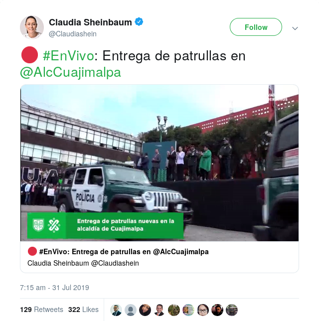

Inspired by How UK Media Cover Artificial Intelligence, we are interested in mediatic discourses around facial recognition and CCTV surveillance. We include state media, ie. the major's Twitter account.

Positivismusstreit
Florian Cramer: critical discussions of data analytics [...] inevitably reenact the positivism dispute of 1960s continental European social sciences
Habermas: The analytical-empirical modes of procedure tolerate only one type of experience which they themselves define.
Facial recognition in Mexico City
- New police cars
- Upgrade the city-wide CCTV system
- Upgrade the specific CCTV system for a market
R3D are also working on this! https://r3d.mx/
Technical specs in press release for new police cars (July 2019)
almacena hasta 15 días de video, tiene capacidades de reconocimiento facial, de identificación de vehículos con reporte de robo, con infracciones o involucrados en eventos de tránsito, dado que tiene capacidad de lectura de placas y por supuesto tiene capacidad de transmitir en vivo video a los centros de mando (Communiqué 1712)
Facial recognition is an element of a much longer list of technical specifications for the police cars. It's troubling that the press release makes no attempt to problematise facial recognition in any way.
Major = Claudia Sheinbaum. Security minister = Jesús Orta Martínez. He left start of October.
The new police cars in the major's Twitter...

For some reason the new police cars are a recurring theme. It's always the same structure:
- Opens with nationalistic performance
- The major, the security minister and someone else give a speech
- The new cars are paraded, the major and her entourage clap, there's blowing of trumpets
How to talk about these images? Some ideas:
- For me it's troubling that her communications team doesn't mind veering into almost fascist imagery
- Are they reaching for the lowest common denominator?
- What are they trying to communicate?
- How self-aware are they about the images they are generating?
https://twitter.com/Claudiashein/status/1155493566531035137 https://twitter.com/Claudiashein/status/1155839854707523585
This video from the major's Twitter reminds me of Donna Haraway's Situated knowledges: "Vision in this technological feast becomes unregulated gluttony; all seems not just mythically about the god trick of seeing everything from nowhere, but to have put the myth into ordinary practice." Beyond Haraway, note that the monitor seems to be playing VLC.
In July and August, policemen were involved in the rape of 3 different women.
Two demonstrations were organised. One of their slogans was NoNosCuidanNosViolan ("They don’t protect us; they rape us.")
During one of the demonstrations, the security minister was glittered, https://www.independent.co.uk/news/world/americas/mexico-city-protest-police-rape-teenage-girls-demonstration-a9055641.html
In my opinion, it's become difficult to talk about one of the cases. This case grew a lot.
- The woman's personal details were leaked to the media by a corrupt judiciary.
- Because of the leak, the woman choose to disengage herself from everything very early in the process
- In one of their news shows, the media included CCTV video related to the case, https://www.youtube.com/watch?v=urDfBRjV01U https://streamable.com/sjvqu
The woman is not visible for most of the duration of the CCTV footage.
In my opinion, the media are being cynical. First they open up to an analytical-empirical mode of procedure. Then they themselves dismantle this possibility with inconclusive CCTV footage.
In this section of the TV show they also put forward the disingenuous proposition that they can be neutral when releasing the video. They explicitly say "nosotros no vamos a sacar conclusiones" (we are not going to draw any conclusions). It could be argued that the release is a conclusion of sorts.
In this case, the usage of CCTV video by the media is problematic. IMO they are exploiting the woman, and they are not making any positive contributions to public debate.
Images from the demonstrations
His immediate verbal response to the glitter bomb included the phrase: Nosotros vamos a garantizar la objectividad, https://twitter.com/azucenau/status/1161019120147718146.
For some reason, he seems unable to contextualise the demonstrations beyond this past summer.
To paraphrase Habermas, he can't see beyond the objectivity of the analytical-empirical modes of procedure that he himself defines.
Images from the demonstrations
Some of the graffitti from the demonstrations included the phrase No somos estadísticas (We are not statistics)
{kind=link}
It's hard to know what the writer's original intention was. I speculate it could go in two directions:
- The writer is saying that there is a strong correlation between someone's gender and their becoming a crime statistic
- An idea of statistics that maybe isn't so popular these days. Statistics as something non-dynamic that exists only in some dusty office and that no one thinks much about.
I like the graffitti for re-appropiation in the context of AI, big data, etc. In this context, I would see some resistance in the writer saying that they're not being modelled by the probabilistic, statistical methods of these technologies.